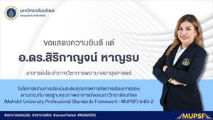
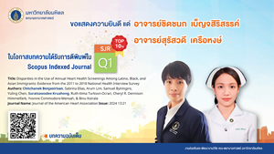
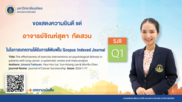
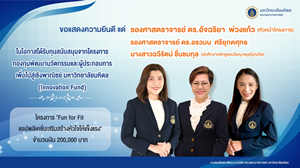
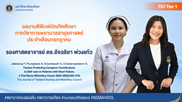
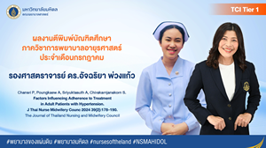
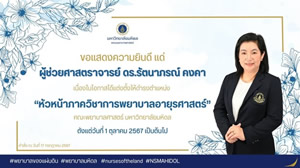

ในโอกาสได้รับคัดเลือกเป็นบุคลากรดีเด่น ของคณะพยาบาลศาสตร์ มหาวิทยาลัยมหิดล กลุ่มที่ 1
ผู้ช่วยศาสตราจารย์จงกลวรรณ มุสิกทอง ในโอกาสได้รับคัดเลือกเป็นบุคลากรดีเด่น ของคณะพยาบาลศาสตร์ มหาวิทยาลัยมหิดล กลุ่มที่ 1 ข้าราชการพลเรือนในสถาบันอดุมศึกษา ประเภทวิชาการ ตำแหน่ง ผู้ช่วยศาสตราจารย์ ประจำปี 2567

ในโอกาสผ่านการประเมินคุณภาพการจัดการเรียนการสอนตามเกณฑ์มาตรฐานคุณภาพอาจารย์ของมหาวิทยาลัยมหิดล
อาจารย์ ดร.สิริกาญจน์ หาญรบ ในโอกาสผ่านการประเมินระดับคุณภาพการจัดการเรียนการสอนตามเกณฑ์มาตรฐานคุณภาพอาจารย์ของมหาวิทยาลัยมหิดล (Mahidol University Professional Standards Framework : MUPSF) ระดับ 2

ในโอกาสบทความได้รับการตีพิมพ์ใน Scopus Indexed Journal SJR TOP 10% Q1
อาจารย์ชิดชนก เบ็ญจสิริสรรค์ และอาจารย์สุรัสวดี เครือหงส์ ในโอกาสบทความได้รับการตีพิมพ์ใน Scopus Indexed Journal SJR TOP 10% Q1 Title: Disparities in the Use of Annual Heart Health Screenings Among Latino, Black, and Asian Immigrants: Evidence from the 2011 to 2018 National Health Interview Survey Authors: Chitchanok Benjasirisan, Sabrina Elias, Arum Lim, Samuel Byiringiro, Yuling Chen, Suratsawadee Kruahong, Ruth-Alma Turkson-Ocran, Cheryl R. Dennison Himmelfarb, Yvonne Commodore-Mensah, & Binu Koirala Journal Name: Journal of the American Heart Association Issue: 2024 13:21
ในโอกาสได้รับทุนสนับสนุนการวิจัย ประจำปีงบประมาณ 2568
อาจารย์ ดร.สิริกาญจน์ หาญรบ (หัวหน้าโครงการ) อาจารย์จิณห์สุตา ทัดสวน ในโอกาสได้รับทุนสนับสนุนการวิจัย ประจำปีงบประมาณ 2568 จากกองทุน ซี.เอ็ม.บี คณะพยาบาลศาสตร์ โครงการเรื่อง “ประสิทธิผลของโมบายแอปพลิเคชั่น healthy LN ต่อ พฤติกรรมการจัดการตนเองและชะลอการเสื่อมของไตในผู้ป่วยไตอักเสบลูปัส” จำนวนเงิน 165,090 บาท

ในโอกาสบทความได้รับการตีพิมพ์ใน Scopus Indexed Journal SJR Q1
อาจารย์จิณห์สุตา ทัดสวน ในโอกาสบทความได้รับการตีพิมพ์ใน Scopus Indexed Journal SJR Q1 Title: The effectiveness of exercise interventions on psychological distress in patients with lung cancer: a systematic review and meta-analysis Authours: Jinsuta Tadsuan, Yeur-Hur Lai, Yun-Hsiang Lee & Min-Ru Chen Journal Name: Journal of Cancer Survivorship Issue: 2024 1-17

ในโอกาสได้รับทุนสนับสนุนจากโครงการกองทุนพัฒนานวัตกรรมและผู้ประกอบการเพื่อไปสู่เชิงพาณิชย์ มหาวิทยาลัยมหิดล (Innovation Fund)
รองศาสตราจารย์ ดร.อัจฉริยา พ่วงแก้ว (หัวหน้าโครงการ) รองศาสตราจารย์ ดร.อรวมน ศรียุกตศุทธ และนางสาวฉวีรัตน์ ชื่นชมกุล (นักศึกษาหลักสูตรปรัชญาดุษฏีบัณฑิต) ในโอกาสได้รับทุนสนับสนุนจากโครงการกองทุนพัฒนานวัตกรรมและผู้ประกอบการเพื่อไปสู่เชิงพาณิชย์ มหาวิทยาลัยมหิดล (Innovation Fund) ในโครงการ “Fun for Fit” แอฟพลิเคชั่นเสริมสร้างหัวใจให้แข็งแรง จำนวนเงิน 200,000 บาท

ในโอกาสมีผลงานตีพิมพ์บัณฑิตศึกษา ภาควิชาการพยาบาลอายุรศาสตร์ ประจำเดือนกรกฎาคม 2567
รองศาสตราจารย์ ดร.อัจฉริยา พ่วงแก้ว ในโอกาสมีผลงานตีพิมพ์บัณฑิตศึกษา ภาควิชาการพยาบาลอายุรศาสตร์ ประจำเดือนกรกฎาคม Jataisong P, Poungkaew A, Sriyuktasuth A, Chirakarnjanakorn S. Factors Predicting Caregiver Contributions to Self-care in Patients with Heart Failure. J Thai Nurse Midwifery Counc 2024 39(2):205-218. The Journal of Thailand Nursing and Midwifery Council

ในโอกาสมีผลงานตีพิมพ์บัณฑิตศึกษา ภาควิชาการพยาบาลอายุรศาสตร์ ประจำเดือนกรกฎาคม 2567
รองศาสตราจารย์ ดร.อัจฉริยา พ่วงแก้ว ในโอกาสมีผลงานตีพิมพ์บัณฑิตศึกษา ภาควิชาการพยาบาลอายุรศาสตร์ ประจำเดือนกรกฎาคม 2567 Chanisri P, Poungkaew A, Sriyuktasuth A, Chirakarnjanakorn S. Factors Influencing Adherence to Treatment in Adult Patients with Hypertension. J Thai Nurse Midwifery Counc 2024 39(2):178-190. The Journal of Thailand Nursing and Midwifery Council
ในโอกาสได้รับรางวัล “ศิษย์เก่าพยาบาลศิริราชดีเด่น” ประจำปี 2567
รองศาสตราจารย์ ดร.อัจฉริยา พ่วงแก้ว ในโอกาสได้รับรางวัล “ศิษย์เก่าพยาบาลศิริราชดีเด่น” ประจำปี 2567 สาขาการวิจัยทางการพยาบาล จากสมาคมศิษย์เก่าพยาบาลศิริราช ในพระราชูปถัมภ์สมเด็จพระศรีนครินทราบรมราชชนนี
ในโอกาสได้รับคัดเลือกเป็นบุคลากรดีเด่น ของคณะพยาบาลศาสตร์ มหาวิทยาลัยมหิดล กลุ่มที่ 4 พนักงานมหาวิทยาลัย
รองศาสตราจารย์ ดร.อัจฉริยา พ่วงแก้ว ในโอกาสได้รับคัดเลือกเป็นบุคลากรดีเด่น ของคณะพยาบาลศาสตร์ มหาวิทยาลัยมหิดล กลุ่มที่ 4 พนักงานมหาวิทยาลัย ประเภทวิชาการ ระยะเวลาการปฏิบัติงานติดต่อตั้งแต่ 20 ปี ขึ้นไป ประจำปี 2567

ในโอกาสได้รับแต่งตั้งให้ดำรงตำแหน่ง “หัวหน้าภาควิชาการพยาบาลอายุรศาสตร์”
ผู้ช่วยศาสตราจารย์ ดร.รัตนาภรณ์ คงคา หัวหน้าภาควิชาการพยาบาลอายุรศาสตร์ ในโอกาสได้รับแต่งตั้งให้ดำรงตำแหน่ง “หัวหน้าภาควิชาการพยาบาลอายุรศาสตร์” คณะพยาบาลศาสตร์ มหาวิทยาลัยมหิดล ตั้งแต่วันที่ 1 ตุลาคม 2567 เป็นต้นไป